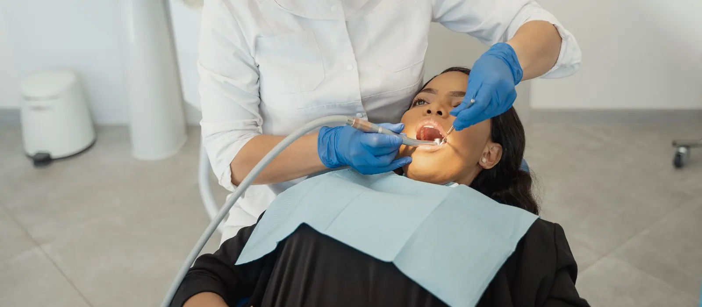
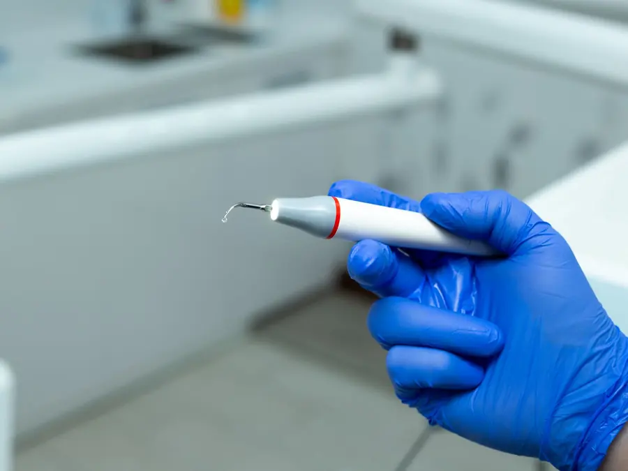

Teeth Cleaning
(Scaling & Polishing)
Removes the hardened tartar a toothbrush cannot shift — the usual reason gums bleed and breath goes stale. One appointment, no drilling.
What professional teeth cleaning actually removes
A soft film of bacteria, called plaque, forms on teeth within hours of brushing. Left in place, minerals in your saliva harden it into tartar (calculus) in a day or two, and once it has hardened no amount of brushing will move it. It builds up fastest in the places a brush passes over quickly: behind the lower front teeth, around the back molars, and just under the gum margin.
Scaling removes those hardened deposits with an ultrasonic tip and fine hand instruments. Polishing then smooths the tooth surface and lifts surface stain from tea, coffee, tobacco and paan. A smooth surface matters beyond appearance — plaque takes noticeably longer to stick to it.
Why it is worth doing before anything hurts
Tartar sitting against the gum keeps it permanently inflamed. That first stage, gingivitis, is bleeding, redness and tenderness, and it is completely reversible. If it is left, the inflammation moves deeper and starts to destroy the bone that holds the tooth in its socket. That stage, periodontitis, is not reversible: the bone does not grow back, and it is the most common reason adults in India lose teeth that were never decayed.
Nothing about the early stage hurts, which is exactly why it is missed. Bleeding when you brush is the signal, and it is not normal.
“Doesn’t scaling weaken the teeth?”
This is the single most common worry we hear, and it is worth answering plainly. An ultrasonic scaler removes deposits by vibrating them loose, with a water spray to keep the tooth cool. The tip is not a blade and is not designed to cut enamel, which is the hardest tissue in the body.
What people notice afterwards is real, though. Teeth can feel a little loose and sensitive for a few days, because the tartar was acting as a splint between them and was covering root surfaces the gum had already receded from. What has changed is that the problem is now visible. As the inflamed gum settles and tightens back around the tooth, the feeling goes.
- Time in the chair
- 30–45 minutes
- Visits
- Usually one
- Anaesthetic
- Not normally needed
- Repeat
- Every 6 months
What happens at
your appointment
So there are no surprises: this is the order a cleaning follows at Evara Dental Clinic.
-
Examination and gum check
Every tooth and gum margin is looked at first, and the gums are checked for where they have pulled away from the tooth. This is what decides whether a routine cleaning is enough or whether the deposits have gone deeper. An X-ray is taken only if the bone level needs checking.
-
Ultrasonic scaling
A fine tip vibrating at high frequency breaks the hardened deposits off the tooth, with a water spray to keep everything cool and flush the debris away. What you feel is vibration and cold water, plus a high-pitched sound. Where gums are inflamed it can be sensitive, and anaesthetic can be used for those areas — say so rather than sitting through it.
-
Hand scaling where it is needed
Fine hand instruments finish the places an ultrasonic tip cannot reach cleanly: just below the gum margin and the tight contacts between teeth. This is the slow part, and it is the part that decides whether the result lasts.
-
Polishing
A soft rubber cup and a fine paste smooth the surface and lift stain from tea, coffee, tobacco and paan. Teeth feel noticeably smoother against the tongue afterwards, and plaque takes longer to settle back on them.
-
Fluoride and what to change
A fluoride application is used where teeth are sensitive or at high risk of decay. Then the useful part: which specific areas you are consistently missing, whether a soft brush and an interdental brush would help, and when to come back.
Aftercare
Nothing here is difficult, but the first week decides how much of the benefit you keep.

- Sensitivity to cold for a few days is normal, particularly where gums had receded. A desensitising toothpaste, used without rinsing it away, settles it.
- Gums may be tender and may bleed a little for a day or two. Keep brushing them gently — stopping is what makes bleeding worse, not better.
- For the first 24 hours after polishing, go easy on tea, coffee, tobacco and other strong stains. The surface takes up colour more readily while it is freshly cleaned.
- Brush twice a day with a soft brush, and clean between the teeth once a day with floss or an interdental brush. A brush alone never reaches the surfaces where gum disease starts.
- Come back in six months — or in three to four if gum disease was found, if you use tobacco, or if you have diabetes.
What it costs
You will be told the cost of your cleaning in writing after the examination, before anything starts. We do not quote a figure over the phone for a mouth nobody has looked at.
What changes the price
How much tartar has built up and how long it takes to remove; whether a routine cleaning is enough or the deposits have gone deep enough under the gum to need root planing, which is done over more than one visit; and whether fluoride or a follow-up gum review is needed afterwards.
“I recently visited Evara Dental Clinic for teeth polishing and cleaning, and it was a great experience. Dr. Kshitija Pervi was not only knowledgeable but also incredibly sweet, making the entire process smooth and comfortable. The clinic itself was clean, aesthetically pleasing, and maintained high hygiene standards. Highly recommend!”
Jayanti Dutta · Google review · Polishing & cleaning
Teeth cleaning: common questions
Does scaling damage enamel or loosen teeth?
No. The ultrasonic tip vibrates hardened deposits off the tooth; it is not sharp and is not designed to cut enamel. Teeth can feel slightly loose or sensitive for a few days afterwards because the tartar that was splinting them together and covering exposed root surfaces has gone. That settles as the inflamed gum tightens back around the tooth.
Is teeth cleaning painful?
For most people it is not painful, only strange: vibration, a high-pitched sound and cold water. If your gums are already inflamed or the roots are exposed, parts of it can be sensitive, and local anaesthetic can be used for those areas. Tell the dentist while it is happening rather than sitting through it.
How often should I get my teeth cleaned?
Every six months suits most people. Three to four months is better if you have been treated for gum disease, if you smoke or use tobacco or paan, if you have diabetes, or if you wear braces — in all of those, deposits return faster.
Will scaling make my teeth white?
It returns them to their own natural shade by removing tartar and surface stain. It does not bleach the tooth, so it cannot make teeth whiter than they naturally are. That is whitening, which is a separate treatment — and it is always done after a cleaning, never instead of one.
Why can I see gaps between my teeth now?
The gaps were already there, filled by tartar and by swollen gum tissue. Once the deposits are gone and the swelling settles, the real spaces show. They are evidence of gum disease that had already progressed, not something the cleaning caused. Leaving the tartar in place would only have hidden it while the bone loss continued.
Is it safe during pregnancy?
Yes, and it is often needed: hormonal changes make gums much more likely to swell and bleed during pregnancy. The second trimester is usually the most comfortable time to sit through it. Do tell us you are pregnant, so X-rays are avoided unless they are genuinely necessary.
Is “deep cleaning” the same thing?
No. Deep cleaning — root planing — is for gum disease that has already gone below the gum line and started to affect bone. It cleans the root surface itself, usually under local anaesthetic and over more than one visit. If your gum check shows it is needed, you will be told why before it is booked.
Related treatments
Teeth Filling
If the check-up finds a cavity, a tooth-coloured filling repairs it before it reaches the nerve.
Read more →Root Canal Treatment
For a tooth where decay or infection has already reached the nerve inside.
Read more →Gums & Periodontal Care
Root planing and gum treatment for disease that has gone deeper than a routine cleaning reaches.
See all treatments →Book a cleaning
Sector 18, Kharghar. Morning and evening slots, Monday to Saturday, Sunday by appointment.